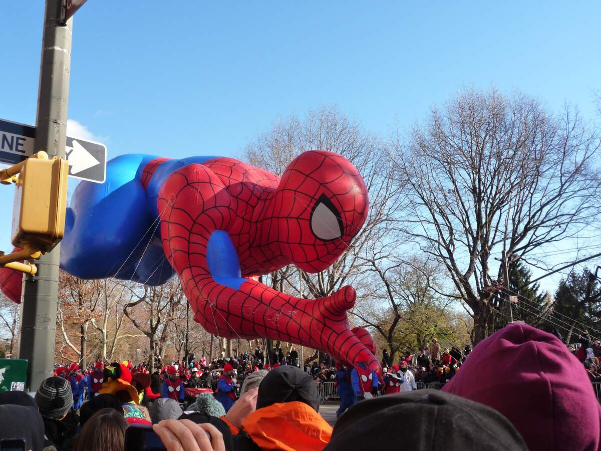

SPIDERMAN'S DAY HISTORY

INTRO TO SPIDEY
Everyone loves Spider-Man. And how can we not? Spider-Man entered the
comic-book universe in issue 15 of Marvel Comics’ “Amazing Fantasy”
in August 1962 and has been a major player ever since. The groundbreaking
story caught the attention of readers when it featured an awkward, antisocial
teenager as its superhero — a description typically associated with sidekicks.
But this bold move turned out to be a boon for creator Stan Lee, who touched the
hearts of a generation of kids who felt lonely, rejected, or had difficulty making friends.
Spider-Man proved that anyone can be a superhero and, even after being around for about 60 years,
he’s still as popular as ever.
HISTORY
Your friendly neighborhood Spider-Man is celebrated with exciting
events, movie marathons, and trading of collectible comic book issues
featuring the superhero. Spider-Man gets the approval of both kids and adults,
which makes him so likable and relatable. Kids don their Spider-Man costumes and
toy web slingers, whereas grown-up enthusiasts wear more elaborate costumes to celebrate
events and parties.
Spider-Man comic books that are rare and collectible are traded and sold. Special issues are also available at some comic book stores.
With the release of the latest Spider-Man video game, gamers and online streamers host playthrough sessions of the latest and older Spider-Man games.
Today is also the day where traditionally we see many masked marauders make news headlines around the world as they attempt to climb walls and buildings — but don’t try this at home
(or anywhere for that matter), kids!.